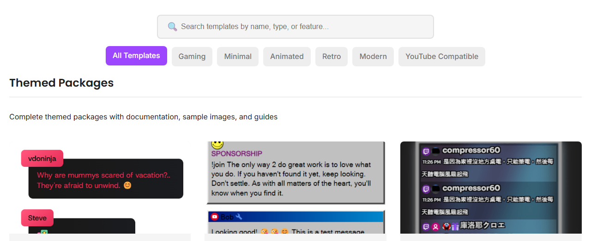

Choisissez une disposition, ajoutez votre identifiant de session et collez le lien dans OBS.
Utilisez : Galerie de modèles si vous souhaitez un style de chat prêt à l'emploi plutôt que d'écrire le CSS de zéro.

Chaque URL d'incrustation nécessite votre identifiant de session. Remplacez la valeur d'exemple par la même session que votre source de chat et votre Dock.
https://socialstream.ninja/sampleoverlay.html?session=YOUR_SESSION_ID
Ouvrez d'abord l'URL du modèle dans un navigateur. Si l'affichage y est correct, le dépannage dans OBS sera plus simple.

Si l'incrustation est vide, testez le Dock avant de modifier les paramètres du modèle.
https://socialstream.ninja/dock.html?session=YOUR_SESSION_ID

Plus de détails : Démarrage rapide OBS.